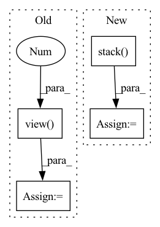

Pattern ID :29095
Before Change
for i, data in enumerate(self.class_dataset):
_input, _label = self.model.get_data(data)
layer_output = self.model.get_layer(_input, layer_output=self.preprocess_layer)
layer_output = layer_output.view( 1, -1 )
if i == 0:
layer_output_all = layer_output
else:
layer_output_all = torch.cat((layer_output_all, layer_output))
After Change
idx.append(k)
class_dataset = torch.utils.data.Subset(self.mix_dataset, idx)
class_input, class_label = dataset_to_list(class_dataset)
class_input = torch.stack( class_input)
class_label = torch.as_tensor(class_label, dtype=torch.long)
class_dataset = TensorDataset(class_input, class_label)
class_dataloader = self.dataset.get_dataloader(mode="train", dataset=self.class_dataset, num_workers=0)
In pattern: SUPERPATTERN
Frequency: 3
Non-data size: 4
Instances Fragment ID: 85785244
Project Name: ain-soph/trojanzoo
Commit Name: 4adb8ae3e90425855448bfd8fc212f8d91f5332c
Time: 2021-06-01
Author: ain-soph@live.com
File Name: trojanvision/defenses/backdoor/spectral_signature.py
M Class Name: SpectralSignature
N Class Name: SpectralSignature
M Method Name: get_clean_dataloader(1)
N Method Name: get_clean_dataloader(1)
M Parent Class: BackdoorDefense
N Parent Class: BackdoorDefense
M File Name: trojanvision/defenses/backdoor/spectral_signature.py
N File Name: trojanvision/defenses/backdoor/spectral_signature.py
M Start Line: 114
M End Line: 126
N Start Line: 113
N End Line: 125
Before Change
val, taus = predict(net, obs, cvar_eta)
current_q.append(val); probs.append(taus)
current_q = torch.stack(current_q, dim=0)
curr_qval = [current_q[i].gather(1, acts.view(-1 , 1) ) for i in range(pred_sprt)]
curr_qval = torch.stack(curr_qval, dim=1).squeeze(2)
probs = torch.stack(probs, dim=1).unsqueeze(1)
//Quantile Regresion LossAfter Change
next_q = torch.stack(next_q, dim=2)
max_act = next_q.mean(dim=2).argmax(dim=1)
next_qval = [next_q[idx][max_a] for idx, max_a in enumerate(max_act)]
next_qval = torch.stack( next_qval, dim=0)
target_q = rewards.view(-1, 1) + discount_factor * next_qval
current_q, probs = [], []
for _ in range(pred_sprt): Fragment ID: 85785247
Project Name: rl-max/deep-reinforcement-learning-pytorch
Commit Name: 73861608078d0aaa893895fc1bcf77e21a3ac545
Time: 2021-06-15
Author: poiroth946@gmail.com
File Name: iqn.py
M Class Name: AnonimousClass
N Class Name: AnonimousClass
M Method Name: train(4)
N Method Name: train(4)
M Parent Class:
N Parent Class:
M File Name: iqn.py
N File Name: iqn.py
M Start Line: 60
M End Line: 73
N Start Line: 61
N End Line: 73
Before Change
num_node = feat_list[0].shape[0]
weighted_feat = torch.mul(feat_list[0], weight_list[:, 0].view(num_node, 1))
for i in range(1, len(feat_list)):
weighted_feat = weighted_feat + torch.mul(feat_list[i], weight_list[:, i].view( num_node, 1 ) )
"""feat_reshape = torch.stack(feat_list, dim=2)
weight_reshape = weight_list.unsqueeze(dim=2)After Change
elif len(weight_list.shape) != 2:
raise ValueError("The weight list should be a 2d tensor!")
feat_reshape = torch.stack( feat_list, dim=2)
weight_reshape = weight_list.unsqueeze(dim=2)
weighted_feat = torch.bmm(feat_reshape, weight_reshape).squeeze(dim=2)
return weighted_feat
Fragment ID: 85785242
Project Name: pku-dair/sgl
Commit Name: 18054d1299613d29452a2ea780ffc54d98e1c5bd
Time: 2022-02-24
Author: shengzeang@live.com
File Name: models/utils.py
M Class Name: AnonimousClass
N Class Name: AnonimousClass
M Method Name: two_dim_weighted_add(2)
N Method Name: two_dim_weighted_add(2)
M Parent Class:
N Parent Class:
M File Name: models/utils.py
N File Name: models/utils.py
M Start Line: 54
M End Line: 59
N Start Line: 54
N End Line: 56